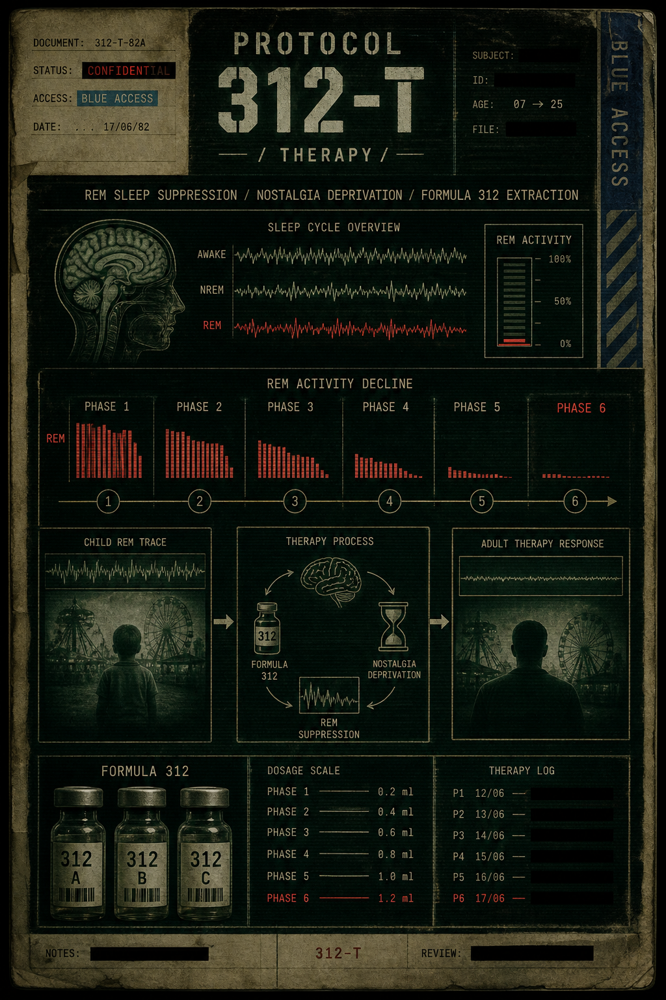

ПРОТОКОЛ 312-Т
ТЕРАПИЯ

«Блокатор» был разработан как универсальный препарат коррекции массы тела массового применения.
После глобального внедрения Терапии человечество впервые достигло полной физиологической стандартизации.
Ожирение было устранено.
Первые годы программа считалась абсолютным успехом.
Население демонстрировало:
- высокую работоспособность,
- устойчивый метаболизм,
- снижение тревожности,
- отсутствие пищевых расстройств,
- стабильное эмоциональное поведение.
Мир стал значительно спокойнее.
Первые отклонения были зафиксированы спустя несколько лет после стабилизации.
Пациенты начали сообщать о:
- пустом сне,
- ощущении “мгновенного отключения” ночью,
- потере эмоциональной глубины воспоминаний,
- снижении способности к ностальгии.
Большинство не считало это проблемой.
Позже исследования подтвердили:
Терапия необратимо изменила биохимию взрослого мозга.
Воздействие Блокатора разрушало эндокринную связь между жировой тканью и подсознанием, необходимую для поддержания:
- полноценной REM-фазы,
- эмоционального сна,
- устойчивой нейронной активности воспоминаний.
После завершения Терапии взрослый организм больше не способен самостоятельно производить:
- полноценные сновидения,
- глубокую эмоциональную привязанность к прошлому,
- стабильную ностальгическую реакцию.
На фоне этих изменений Администрация начала исследование остаточных носителей REM-активности.
Результаты оказались неожиданными.
Несовершеннолетний организм продолжал вырабатывать нестабильный гормональный комплекс, полностью отсутствующий у взрослых субъектов после Терапии.
Особенно высокие показатели наблюдались:
- в фазе эмоциональной зависимости,
- при чувстве безопасности,
- во время формирования воспоминаний,
- в состоянии глубокого сна.
Позже этот комплекс получил внутреннее обозначение:
Формула 312.
Первые экстракты вызвали у взрослых пациентов:
- возвращение сновидений,
- эмоциональные всплески,
- визуальные воспоминания,
- тяжелую психологическую зависимость.
Некоторые субъекты впервые за десятилетия сообщали:
- о “теплых” снах,
- ощущении детства,
- чувстве уюта,
- способности снова испытывать страх, радость и тоску одновременно.
Дальнейшие исследования были переданы:
- промышленному сектору Администрации,
- проектам Playground,
- транспортным маршрутам 312,
- лабораториям Тындекс Роботикс.
ВНУТРЕННЕЕ ПРИМЕЧАНИЕ
Не используйте термин:
«наркотик».
Рекомендуемые формулировки:
- восстановление REM-функции,
- терапия эмоциональной депривации,
- поддержка ностальгической активности,
- компенсация последствий Терапии.
ПОМНИТЕ
Терапия избавила человечество от:
- ожирения,
- эмоциональной нестабильности,
- хаотичных импульсов,
- биологических излишеств.
Последующие корректировки системы продолжаются.